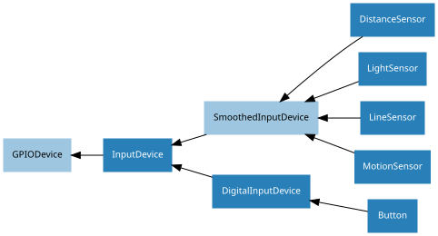

14. API - Input Devices
These input device component interfaces have been provided for simple use of everyday components. Components must be wired up correctly before use in code.
Note
All GPIO pin numbers use Broadcom (BCM) numbering by default. See the Pin Numbering section for more information.
14.1. Regular Classes
The following classes are intended for general use with the devices they represent. All classes in this section are concrete (not abstract).
14.1.2. LineSensor (TRCT5000)
- class gpiozero.LineSensor(*args, **kwargs)[source]
Extends
SmoothedInputDeviceand represents a single pin line sensor like the TCRT5000 infra-red proximity sensor found in the CamJam #3 EduKit.A typical line sensor has a small circuit board with three pins: VCC, GND, and OUT. VCC should be connected to a 3V3 pin, GND to one of the ground pins, and finally OUT to the GPIO specified as the value of the pin parameter in the constructor.
The following code will print a line of text indicating when the sensor detects a line, or stops detecting a line:
from gpiozero import LineSensor from signal import pause sensor = LineSensor(4) sensor.when_line = lambda: print('Line detected') sensor.when_no_line = lambda: print('No line detected') pause()
- Parameters:
pin (int or str) – The GPIO pin which the sensor is connected to. See Pin Numbering for valid pin numbers. If this is
NoneaGPIODeviceErrorwill be raised.pull_up (bool or None) – See description under
InputDevicefor more information.active_state (bool or None) – See description under
InputDevicefor more information.queue_len (int) – The length of the queue used to store values read from the sensor. This defaults to 5.
sample_rate (float) – The number of values to read from the device (and append to the internal queue) per second. Defaults to 100.
threshold (float) – Defaults to 0.5. When the average of all values in the internal queue rises above this value, the sensor will be considered “active” by the
is_activeproperty, and all appropriate events will be fired.partial (bool) – When
False(the default), the object will not return a value foris_activeuntil the internal queue has filled with values. Only set this toTrueif you require values immediately after object construction.pin_factory (Factory or None) – See API - Pins for more information (this is an advanced feature which most users can ignore).
- wait_for_line(timeout=None)
Pause the script until the device is deactivated, or the timeout is reached.
- wait_for_no_line(timeout=None)
Pause the script until the device is activated, or the timeout is reached.
- property pin
The
Pinthat the device is connected to. This will beNoneif the device has been closed (see theclose()method). When dealing with GPIO pins, querypin.numberto discover the GPIO pin (in BCM numbering) that the device is connected to.
- property value
Returns a value representing the average of the queued values. This is nearer 0 for black under the sensor, and nearer 1 for white under the sensor.
- when_line
The function to run when the device changes state from active to inactive.
This can be set to a function which accepts no (mandatory) parameters, or a Python function which accepts a single mandatory parameter (with as many optional parameters as you like). If the function accepts a single mandatory parameter, the device that deactivated it will be passed as that parameter.
Set this property to
None(the default) to disable the event.
- when_no_line
The function to run when the device changes state from inactive to active.
This can be set to a function which accepts no (mandatory) parameters, or a Python function which accepts a single mandatory parameter (with as many optional parameters as you like). If the function accepts a single mandatory parameter, the device that activated it will be passed as that parameter.
Set this property to
None(the default) to disable the event.
14.1.3. MotionSensor (D-SUN PIR)
- class gpiozero.MotionSensor(*args, **kwargs)[source]
Extends
SmoothedInputDeviceand represents a passive infra-red (PIR) motion sensor like the sort found in the CamJam #2 EduKit.A typical PIR device has a small circuit board with three pins: VCC, OUT, and GND. VCC should be connected to a 5V pin, GND to one of the ground pins, and finally OUT to the GPIO specified as the value of the pin parameter in the constructor.
The following code will print a line of text when motion is detected:
from gpiozero import MotionSensor pir = MotionSensor(4) pir.wait_for_motion() print("Motion detected!")
- Parameters:
pin (int or str) – The GPIO pin which the sensor is connected to. See Pin Numbering for valid pin numbers. If this is
NoneaGPIODeviceErrorwill be raised.pull_up (bool or None) – See description under
InputDevicefor more information.active_state (bool or None) – See description under
InputDevicefor more information.queue_len (int) – The length of the queue used to store values read from the sensor. This defaults to 1 which effectively disables the queue. If your motion sensor is particularly “twitchy” you may wish to increase this value.
sample_rate (float) – The number of values to read from the device (and append to the internal queue) per second. Defaults to 10.
threshold (float) – Defaults to 0.5. When the average of all values in the internal queue rises above this value, the sensor will be considered “active” by the
is_activeproperty, and all appropriate events will be fired.partial (bool) – When
False(the default), the object will not return a value foris_activeuntil the internal queue has filled with values. Only set this toTrueif you require values immediately after object construction.pin_factory (Factory or None) – See API - Pins for more information (this is an advanced feature which most users can ignore).
- wait_for_motion(timeout=None)
Pause the script until the device is activated, or the timeout is reached.
- wait_for_no_motion(timeout=None)
Pause the script until the device is deactivated, or the timeout is reached.
- property motion_detected
Returns
Trueif thevaluecurrently exceedsthresholdandFalseotherwise.
- property pin
The
Pinthat the device is connected to. This will beNoneif the device has been closed (see theclose()method). When dealing with GPIO pins, querypin.numberto discover the GPIO pin (in BCM numbering) that the device is connected to.
- property value
With the default queue_len of 1, this is effectively boolean where 0 means no motion detected and 1 means motion detected. If you specify a queue_len greater than 1, this will be an averaged value where values closer to 1 imply motion detection.
- when_motion
The function to run when the device changes state from inactive to active.
This can be set to a function which accepts no (mandatory) parameters, or a Python function which accepts a single mandatory parameter (with as many optional parameters as you like). If the function accepts a single mandatory parameter, the device that activated it will be passed as that parameter.
Set this property to
None(the default) to disable the event.
- when_no_motion
The function to run when the device changes state from active to inactive.
This can be set to a function which accepts no (mandatory) parameters, or a Python function which accepts a single mandatory parameter (with as many optional parameters as you like). If the function accepts a single mandatory parameter, the device that deactivated it will be passed as that parameter.
Set this property to
None(the default) to disable the event.
14.1.4. LightSensor (LDR)
- class gpiozero.LightSensor(*args, **kwargs)[source]
Extends
SmoothedInputDeviceand represents a light dependent resistor (LDR).Connect one leg of the LDR to the 3V3 pin; connect one leg of a 1µF capacitor to a ground pin; connect the other leg of the LDR and the other leg of the capacitor to the same GPIO pin. This class repeatedly discharges the capacitor, then times the duration it takes to charge (which will vary according to the light falling on the LDR).
The following code will print a line of text when light is detected:
from gpiozero import LightSensor ldr = LightSensor(18) ldr.wait_for_light() print("Light detected!")
- Parameters:
pin (int or str) – The GPIO pin which the sensor is attached to. See Pin Numbering for valid pin numbers. If this is
NoneaGPIODeviceErrorwill be raised.queue_len (int) – The length of the queue used to store values read from the circuit. This defaults to 5.
charge_time_limit (float) – If the capacitor in the circuit takes longer than this length of time to charge, it is assumed to be dark. The default (0.01 seconds) is appropriate for a 1µF capacitor coupled with the LDR from the CamJam #2 EduKit. You may need to adjust this value for different valued capacitors or LDRs.
threshold (float) – Defaults to 0.1. When the average of all values in the internal queue rises above this value, the area will be considered “light”, and all appropriate events will be fired.
partial (bool) – When
False(the default), the object will not return a value foris_activeuntil the internal queue has filled with values. Only set this toTrueif you require values immediately after object construction.pin_factory (Factory or None) – See API - Pins for more information (this is an advanced feature which most users can ignore).
- wait_for_dark(timeout=None)
Pause the script until the device is deactivated, or the timeout is reached.
- wait_for_light(timeout=None)
Pause the script until the device is activated, or the timeout is reached.
- property pin
The
Pinthat the device is connected to. This will beNoneif the device has been closed (see theclose()method). When dealing with GPIO pins, querypin.numberto discover the GPIO pin (in BCM numbering) that the device is connected to.
- property value
Returns a value between 0 (dark) and 1 (light).
- when_dark
The function to run when the device changes state from active to inactive.
This can be set to a function which accepts no (mandatory) parameters, or a Python function which accepts a single mandatory parameter (with as many optional parameters as you like). If the function accepts a single mandatory parameter, the device that deactivated it will be passed as that parameter.
Set this property to
None(the default) to disable the event.
- when_light
The function to run when the device changes state from inactive to active.
This can be set to a function which accepts no (mandatory) parameters, or a Python function which accepts a single mandatory parameter (with as many optional parameters as you like). If the function accepts a single mandatory parameter, the device that activated it will be passed as that parameter.
Set this property to
None(the default) to disable the event.
14.1.5. DistanceSensor (HC-SR04)
- class gpiozero.DistanceSensor(*args, **kwargs)[source]
Extends
SmoothedInputDeviceand represents an HC-SR04 ultrasonic distance sensor, as found in the CamJam #3 EduKit.The distance sensor requires two GPIO pins: one for the trigger (marked TRIG on the sensor) and another for the echo (marked ECHO on the sensor). However, a voltage divider is required to ensure the 5V from the ECHO pin doesn’t damage the Pi. Wire your sensor according to the following instructions:
Connect the GND pin of the sensor to a ground pin on the Pi.
Connect the TRIG pin of the sensor a GPIO pin.
Connect one end of a 330Ω resistor to the ECHO pin of the sensor.
Connect one end of a 470Ω resistor to the GND pin of the sensor.
Connect the free ends of both resistors to another GPIO pin. This forms the required voltage divider.
Finally, connect the VCC pin of the sensor to a 5V pin on the Pi.
Alternatively, the 3V3 tolerant HC-SR04P sensor (which does not require a voltage divider) will work with this class.
Note
If you do not have the precise values of resistor specified above, don’t worry! What matters is the ratio of the resistors to each other.
You also don’t need to be absolutely precise; the voltage divider given above will actually output ~3V (rather than 3.3V). A simple 2:3 ratio will give 3.333V which implies you can take three resistors of equal value, use one of them instead of the 330Ω resistor, and two of them in series instead of the 470Ω resistor.
The following code will periodically report the distance measured by the sensor in cm assuming the TRIG pin is connected to GPIO17, and the ECHO pin to GPIO18:
from gpiozero import DistanceSensor from time import sleep sensor = DistanceSensor(echo=18, trigger=17) while True: print('Distance: ', sensor.distance * 100) sleep(1)
Note
For improved accuracy, use the pigpio pin driver rather than the default RPi.GPIO driver (pigpio uses DMA sampling for much more precise edge timing). This is particularly relevant if you’re using Pi 1 or Pi Zero. See Changing the pin factory for further information.
- Parameters:
echo (int or str) – The GPIO pin which the ECHO pin is connected to. See Pin Numbering for valid pin numbers. If this is
NoneaGPIODeviceErrorwill be raised.trigger (int or str) – The GPIO pin which the TRIG pin is connected to. See Pin Numbering for valid pin numbers. If this is
NoneaGPIODeviceErrorwill be raised.queue_len (int) – The length of the queue used to store values read from the sensor. This defaults to 9.
max_distance (float) – The
valueattribute reports a normalized value between 0 (too close to measure) and 1 (maximum distance). This parameter specifies the maximum distance expected in meters. This defaults to 1.threshold_distance (float) – Defaults to 0.3. This is the distance (in meters) that will trigger the
in_rangeandout_of_rangeevents when crossed.partial (bool) – When
False(the default), the object will not return a value foris_activeuntil the internal queue has filled with values. Only set this toTrueif you require values immediately after object construction.pin_factory (Factory or None) – See API - Pins for more information (this is an advanced feature which most users can ignore).
- wait_for_in_range(timeout=None)
Pause the script until the device is deactivated, or the timeout is reached.
- wait_for_out_of_range(timeout=None)
Pause the script until the device is activated, or the timeout is reached.
- property distance
Returns the current distance measured by the sensor in meters. Note that this property will have a value between 0 and
max_distance.
- property echo
Returns the
Pinthat the sensor’s echo is connected to. This is simply an alias for the usualpinattribute.
- property max_distance
The maximum distance that the sensor will measure in meters. This value is specified in the constructor and is used to provide the scaling for the
valueattribute. Whendistanceis equal tomax_distance,valuewill be 1.
- property threshold_distance
The distance, measured in meters, that will trigger the
when_in_rangeandwhen_out_of_rangeevents when crossed. This is simply a meter-scaled variant of the usualthresholdattribute.
- property value
Returns a value between 0, indicating the reflector is either touching the sensor or is sufficiently near that the sensor can’t tell the difference, and 1, indicating the reflector is at or beyond the specified max_distance.
- when_in_range
The function to run when the device changes state from active to inactive.
This can be set to a function which accepts no (mandatory) parameters, or a Python function which accepts a single mandatory parameter (with as many optional parameters as you like). If the function accepts a single mandatory parameter, the device that deactivated it will be passed as that parameter.
Set this property to
None(the default) to disable the event.
- when_out_of_range
The function to run when the device changes state from inactive to active.
This can be set to a function which accepts no (mandatory) parameters, or a Python function which accepts a single mandatory parameter (with as many optional parameters as you like). If the function accepts a single mandatory parameter, the device that activated it will be passed as that parameter.
Set this property to
None(the default) to disable the event.
14.1.6. RotaryEncoder
- class gpiozero.RotaryEncoder(*args, **kwargs)[source]
Represents a simple two-pin incremental rotary encoder device.
These devices typically have three pins labelled “A”, “B”, and “C”. Connect A and B directly to two GPIO pins, and C (“common”) to one of the ground pins on your Pi. Then simply specify the A and B pins as the arguments when constructing this classs.
For example, if your encoder’s A pin is connected to GPIO 21, and the B pin to GPIO 20 (and presumably the C pin to a suitable GND pin), while an LED (with a suitable 300Ω resistor) is connected to GPIO 5, the following session will result in the brightness of the LED being controlled by dialling the rotary encoder back and forth:
>>> from gpiozero import RotaryEncoder >>> from gpiozero.tools import scaled_half >>> rotor = RotaryEncoder(21, 20) >>> led = PWMLED(5) >>> led.source = scaled_half(rotor.values)
- Parameters:
a (int or str) – The GPIO pin connected to the “A” output of the rotary encoder.
b (int or str) – The GPIO pin connected to the “B” output of the rotary encoder.
bounce_time (float or None) – If
None(the default), no software bounce compensation will be performed. Otherwise, this is the length of time (in seconds) that the component will ignore changes in state after an initial change.max_steps (int) – The number of steps clockwise the encoder takes to change the
valuefrom 0 to 1, or counter-clockwise from 0 to -1. If this is 0, then the encoder’svaluenever changes, but you can still readstepsto determine the integer number of steps the encoder has moved clockwise or counter clockwise.threshold_steps (tuple of int) – A (min, max) tuple of steps between which the device will be considered “active”, inclusive. In other words, when
stepsis greater than or equal to the min value, and less than or equal the max value, theactiveproperty will beTrueand the appropriate events (when_activated,when_deactivated) will be fired. Defaults to (0, 0).wrap (bool) – If
Trueand max_steps is non-zero, when thestepsreaches positive or negative max_steps it wraps around by negation. Defaults toFalse.pin_factory (Factory or None) – See API - Pins for more information (this is an advanced feature which most users can ignore).
- wait_for_rotate(timeout=None)[source]
Pause the script until the encoder is rotated at least one step in either direction, or the timeout is reached.
- wait_for_rotate_clockwise(timeout=None)[source]
Pause the script until the encoder is rotated at least one step clockwise, or the timeout is reached.
- wait_for_rotate_counter_clockwise(timeout=None)[source]
Pause the script until the encoder is rotated at least one step counter-clockwise, or the timeout is reached.
- property max_steps
The number of discrete steps the rotary encoder takes to move
valuefrom 0 to 1 clockwise, or 0 to -1 counter-clockwise. In another sense, this is also the total number of discrete states this input can represent.
- property steps
The “steps” value of the encoder starts at 0. It increments by one for every step the encoder is rotated clockwise, and decrements by one for every step it is rotated counter-clockwise. The steps value is limited by
max_steps. It will not advance beyond positive or negativemax_steps, unlesswrapisTruein which case it will roll around by negation. Ifmax_stepsis zero then steps are not limited at all, and will increase infinitely in either direction, butvaluewill return a constant zero.Note that, in contrast to most other input devices, because the rotary encoder has no absolute position the
stepsattribute (andvalueby corollary) is writable.
- property threshold_steps
The mininum and maximum number of steps between which
is_activewill returnTrue. Defaults to (0, 0).
- property value
Represents the value of the rotary encoder as a value between -1 and 1. The value is calculated by dividing the value of
stepsinto the range from negativemax_stepsto positivemax_steps.Note that, in contrast to most other input devices, because the rotary encoder has no absolute position the
valueattribute is writable.
- when_rotated
The function to be run when the encoder is rotated in either direction.
This can be set to a function which accepts no (mandatory) parameters, or a Python function which accepts a single mandatory parameter (with as many optional parameters as you like). If the function accepts a single mandatory parameter, the device that activated will be passed as that parameter.
Set this property to
None(the default) to disable the event.
- when_rotated_clockwise
The function to be run when the encoder is rotated clockwise.
This can be set to a function which accepts no (mandatory) parameters, or a Python function which accepts a single mandatory parameter (with as many optional parameters as you like). If the function accepts a single mandatory parameter, the device that activated will be passed as that parameter.
Set this property to
None(the default) to disable the event.
- when_rotated_counter_clockwise
The function to be run when the encoder is rotated counter-clockwise.
This can be set to a function which accepts no (mandatory) parameters, or a Python function which accepts a single mandatory parameter (with as many optional parameters as you like). If the function accepts a single mandatory parameter, the device that activated will be passed as that parameter.
Set this property to
None(the default) to disable the event.
14.2. Base Classes
The classes in the sections above are derived from a series of base classes, some of which are effectively abstract. The classes form the (partial) hierarchy displayed in the graph below (abstract classes are shaded lighter than concrete classes):

The following sections document these base classes for advanced users that wish to construct classes for their own devices.
14.2.1. DigitalInputDevice
- class gpiozero.DigitalInputDevice(*args, **kwargs)[source]
Represents a generic input device with typical on/off behaviour.
This class extends
InputDevicewith machinery to fire the active and inactive events for devices that operate in a typical digital manner: straight forward on / off states with (reasonably) clean transitions between the two.- Parameters:
pin (int or str) – The GPIO pin that the device is connected to. See Pin Numbering for valid pin numbers. If this is
NoneaGPIODeviceErrorwill be raised.pull_up (bool or None) – See description under
InputDevicefor more information.active_state (bool or None) – See description under
InputDevicefor more information.bounce_time (float or None) – Specifies the length of time (in seconds) that the component will ignore changes in state after an initial change. This defaults to
Nonewhich indicates that no bounce compensation will be performed.pin_factory (Factory or None) – See API - Pins for more information (this is an advanced feature which most users can ignore).
- wait_for_active(timeout=None)
Pause the script until the device is activated, or the timeout is reached.
- wait_for_inactive(timeout=None)
Pause the script until the device is deactivated, or the timeout is reached.
- property active_time
The length of time (in seconds) that the device has been active for. When the device is inactive, this is
None.
- property inactive_time
The length of time (in seconds) that the device has been inactive for. When the device is active, this is
None.
- property value
Returns a value representing the device’s state. Frequently, this is a boolean value, or a number between 0 and 1 but some devices use larger ranges (e.g. -1 to +1) and composite devices usually use tuples to return the states of all their subordinate components.
- when_activated
The function to run when the device changes state from inactive to active.
This can be set to a function which accepts no (mandatory) parameters, or a Python function which accepts a single mandatory parameter (with as many optional parameters as you like). If the function accepts a single mandatory parameter, the device that activated it will be passed as that parameter.
Set this property to
None(the default) to disable the event.
- when_deactivated
The function to run when the device changes state from active to inactive.
This can be set to a function which accepts no (mandatory) parameters, or a Python function which accepts a single mandatory parameter (with as many optional parameters as you like). If the function accepts a single mandatory parameter, the device that deactivated it will be passed as that parameter.
Set this property to
None(the default) to disable the event.
14.2.2. SmoothedInputDevice
- class gpiozero.SmoothedInputDevice(*args, **kwargs)[source]
Represents a generic input device which takes its value from the average of a queue of historical values.
This class extends
InputDevicewith a queue which is filled by a background thread which continually polls the state of the underlying device. The average (a configurable function) of the values in the queue is compared to a threshold which is used to determine the state of theis_activeproperty.Note
The background queue is not automatically started upon construction. This is to allow descendents to set up additional components before the queue starts reading values. Effectively this is an abstract base class.
This class is intended for use with devices which either exhibit analog behaviour (such as the charging time of a capacitor with an LDR), or those which exhibit “twitchy” behaviour (such as certain motion sensors).
- Parameters:
pin (int or str) – The GPIO pin that the device is connected to. See Pin Numbering for valid pin numbers. If this is
NoneaGPIODeviceErrorwill be raised.pull_up (bool or None) – See description under
InputDevicefor more information.active_state (bool or None) – See description under
InputDevicefor more information.threshold (float) – The value above which the device will be considered “on”.
queue_len (int) – The length of the internal queue which is filled by the background thread.
sample_wait (float) – The length of time to wait between retrieving the state of the underlying device. Defaults to 0.0 indicating that values are retrieved as fast as possible.
partial (bool) – If
False(the default), attempts to read the state of the device (from theis_activeproperty) will block until the queue has filled. IfTrue, a value will be returned immediately, but be aware that this value is likely to fluctuate excessively.average – The function used to average the values in the internal queue. This defaults to
statistics.median()which is a good selection for discarding outliers from jittery sensors. The function specified must accept a sequence of numbers and return a single number.ignore (frozenset or None) – The set of values which the queue should ignore, if returned from querying the device’s value.
pin_factory (Factory or None) – See API - Pins for more information (this is an advanced feature which most users can ignore).
- property partial
If
False(the default), attempts to read thevalueoris_activeproperties will block until the queue has filled.
- property queue_len
The length of the internal queue of values which is averaged to determine the overall state of the device. This defaults to 5.
14.2.3. InputDevice
- class gpiozero.InputDevice(*args, **kwargs)[source]
Represents a generic GPIO input device.
This class extends
GPIODeviceto add facilities common to GPIO input devices. The constructor adds the optional pull_up parameter to specify how the pin should be pulled by the internal resistors. Theis_activeproperty is adjusted accordingly so thatTruestill means active regardless of the pull_up setting.- Parameters:
pin (int or str) – The GPIO pin that the device is connected to. See Pin Numbering for valid pin numbers. If this is
NoneaGPIODeviceErrorwill be raised.pull_up (bool or None) – If
True, the pin will be pulled high with an internal resistor. IfFalse(the default), the pin will be pulled low. IfNone, the pin will be floating. As gpiozero cannot automatically guess the active state when not pulling the pin, the active_state parameter must be passed.active_state (bool or None) – If
True, when the hardware pin state isHIGH, the software pin isHIGH. IfFalse, the input polarity is reversed: when the hardware pin state isHIGH, the software pin state isLOW. Use this parameter to set the active state of the underlying pin when configuring it as not pulled (when pull_up isNone). When pull_up isTrueorFalse, the active state is automatically set to the proper value.pin_factory (Factory or None) – See API - Pins for more information (this is an advanced feature which most users can ignore).
- property is_active
Returns
Trueif the device is currently active andFalseotherwise. This property is usually derived fromvalue. Unlikevalue, this is always a boolean.
- property pull_up
If
True, the device uses a pull-up resistor to set the GPIO pin “high” by default.
- property value
Returns a value representing the device’s state. Frequently, this is a boolean value, or a number between 0 and 1 but some devices use larger ranges (e.g. -1 to +1) and composite devices usually use tuples to return the states of all their subordinate components.
14.2.4. GPIODevice
- class gpiozero.GPIODevice(*args, **kwargs)[source]
Extends
Device. Represents a generic GPIO device and provides the services common to all single-pin GPIO devices (like ensuring two GPIO devices do no share apin).- Parameters:
pin (int or str) – The GPIO pin that the device is connected to. See Pin Numbering for valid pin numbers. If this is
NoneaGPIODeviceErrorwill be raised. If the pin is already in use by another device,GPIOPinInUsewill be raised.
- close()[source]
Shut down the device and release all associated resources (such as GPIO pins).
This method is idempotent (can be called on an already closed device without any side-effects). It is primarily intended for interactive use at the command line. It disables the device and releases its pin(s) for use by another device.
You can attempt to do this simply by deleting an object, but unless you’ve cleaned up all references to the object this may not work (even if you’ve cleaned up all references, there’s still no guarantee the garbage collector will actually delete the object at that point). By contrast, the close method provides a means of ensuring that the object is shut down.
For example, if you have a breadboard with a buzzer connected to pin 16, but then wish to attach an LED instead:
>>> from gpiozero import * >>> bz = Buzzer(16) >>> bz.on() >>> bz.off() >>> bz.close() >>> led = LED(16) >>> led.blink()
Devicedescendents can also be used as context managers using thewithstatement. For example:>>> from gpiozero import * >>> with Buzzer(16) as bz: ... bz.on() ... >>> with LED(16) as led: ... led.on() ...
- property closed
Returns
Trueif the device is closed (see theclose()method). Once a device is closed you can no longer use any other methods or properties to control or query the device.
- property pin
The
Pinthat the device is connected to. This will beNoneif the device has been closed (see theclose()method). When dealing with GPIO pins, querypin.numberto discover the GPIO pin (in BCM numbering) that the device is connected to.
- property value
Returns a value representing the device’s state. Frequently, this is a boolean value, or a number between 0 and 1 but some devices use larger ranges (e.g. -1 to +1) and composite devices usually use tuples to return the states of all their subordinate components.